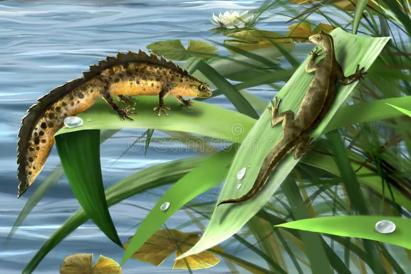

Caudata
Caudata are things such as salamanders and newts
Caudata is an order of amphibians that includes salamanders, newts, and their close relatives. These animals are known for their elongated bodies, tails retained throughout life, and limb structures that often give them a distinctive, lizardlike appearance. Many caudates rely heavily on moist environments, as their skin is permeable and plays a key role in respiration. They exhibit remarkable regenerative abilities, capable of regrowing lost limbs and even parts of internal organs. Found in a wide range of habitats from slowmoving streams to forest floors—caudates play important roles in ecosystems as both predators and prey.

Back to main page
back to the the other amphibians